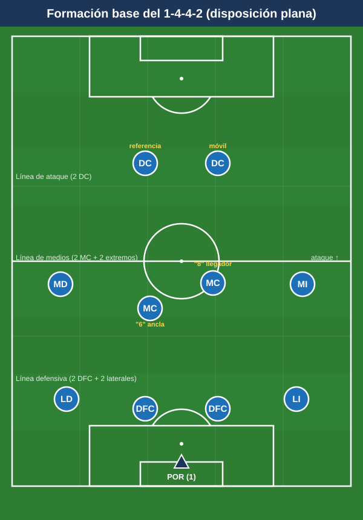
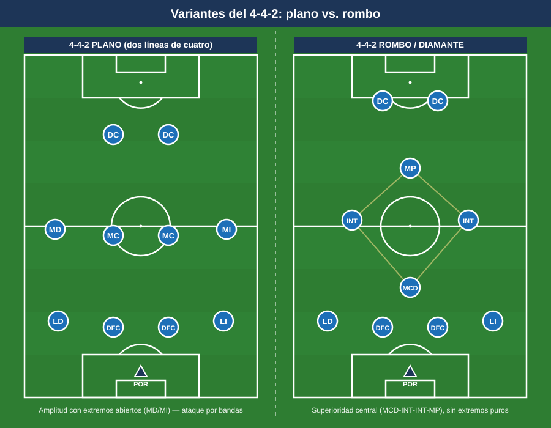

Módulo 01 — Fundamentos del 1-4-4-2
Marco conceptual mínimo e imprescindible. Aquí se fija el vocabulario y la estructura sobre los que se construye todo el curso. Para la convención de posiciones y las distancias de referencia, ver el README.
1. Qué es el 1-4-4-2
El 1-4-4-2 es un sistema de juego organizado en tres líneas de jugadores de campo más el portero, con distribución 4-4-2. Su rasgo identitario es la doble línea de cuatro (defensa y mediocampo), que genera un bloque ordenado, compacto y fácil de coordinar, con dos puntas de referencia ofensiva.
Distribución de líneas (versión plana):
- POR (1): organizador del último tercio, primer iniciador de la salida y hombre libre detrás de la defensa.
- Línea defensiva (4): dos DFC (centrales) y dos laterales (LD / LI).
- Línea de medios (4): dos MC (doble pivote) y dos extremos (MD / MI).
- Línea de ataque (2): dos DC con perfiles complementarios.

Cómo se lee el campo
- Carriles verticales (5): lateral izq., interior izq. (medio espacio), central, interior der. (medio espacio), lateral der. Los medios espacios (entre lateral y central) son el punto que más explotan los rivales contra este sistema.
- Franjas horizontales (3): zona defensiva, zona media (creación), zona ofensiva (finalización).
- Zona 14 / Maradona: espacio interior por delante del área rival. El 4-4-2 plano no coloca a nadie fijo ahí (no hay mediapunta); la ocupa la llegada de un MC o la caída de un DC.
2. Contexto histórico (resumen)
El 4-4-2 hereda del 4-4-2 británico y del 4-2-4 brasileño de 1958. Su formulación moderna como sistema de presión y bloque se asocia a cuatro referencias:
- Arrigo Sacchi (Milan, 1987–91): padre del 4-4-2 moderno. Bloque compacto, presión alta, fuera de juego coordinado y zona pura. Su regla de compacidad (~25–30 m de la primera a la última línea) es el origen de la profundidad de bloque del curso.
- Alex Ferguson (Manchester United): extremos puros, amplitud, transiciones rápidas y dos delanteros complementarios.
- Rafa Benítez (Valencia / Liverpool): disciplina posicional, bloque medio-bajo, gran organización zonal.
- Diego Simeone (Atlético de Madrid, desde 2011): resurgimiento contemporáneo del 4-4-2 como bloque medio-bajo de élite, transiciones y juego directo a dos puntas.
Idea para el aula: el 4-4-2 no es "antiguo". Es simple de enseñar y muy robusto defensivamente, lo que lo hace ideal para formación y para equipos que priorizan orden, transición y solidez.
3. Principios de juego asociados
Los principios son las ideas rectoras que dan sentido a los movimientos.
Ofensivos:
- Amplitud: los extremos (y laterales) abren el campo para estirar al rival y generar espacios interiores.
- Profundidad: uno de los DC ataca el espacio a la espalda de la defensa rival.
- Escalonamiento: evitar dos compañeros a la misma altura del balón; crear triángulos y rombos de pase. Es lo que más sufre el 4-4-2 plano por sus líneas rectas, de ahí las caídas (un DC baja, un extremo pisa por dentro).
- Movilidad / desmarques: ruptura (a la espalda) y apoyo (al pie); los DC se reparten roles.
- Líneas de pase: el poseedor siempre con 2-3 opciones.
- Temporización ofensiva: ritmo de circulación para esperar la llegada de hombres.
Defensivos:
- Basculación: las dos líneas se mueven juntas hacia el lado del balón.
- Reducción de espacios (compactar): distancias cortas entre líneas.
- Coberturas y permutas: quien no presiona cubre la espalda del que sale.
- Vigilancias: preventiva (durante el ataque propio) y defensiva (sobre el hombre libre en zona).
- Presión, repliegue y achique: decisión colectiva sobre dónde defender.
- Solidaridad defensiva: en el 4-4-2 los 10 de campo defienden.
4. Variantes del sistema
4.1 4-4-2 plano (dos líneas de cuatro)
- Estructura: 4 defensas + 4 medios (2 extremos + 2 MC) + 2 DC, todos en línea.
- Fortalezas: máxima solidez y compacidad; cobertura natural de bandas; sencillez de coordinación; transiciones limpias a dos puntas.
- Debilidades: pocos efectivos en el centro (2 MC vs 3 rivales); ausencia de mediapunta en la zona 14.
- Cuándo usarlo: equipos que buscan orden; bloques medio/bajo (modelo Simeone); contra rivales que necesitan espacio para combinar; en formación, por su claridad.
4.2 4-4-2 en rombo / diamante
- Estructura: los cuatro centrocampistas en rombo: un MCD, dos interiores y un mediapunta (enganche) por detrás de los dos DC.
- Fortalezas: superioridad en el centro (4 por el eje); ocupa la zona 14; juego combinativo interior.
- Debilidades: renuncia a extremos → falta amplitud; las bandas quedan a cargo de los laterales (alto coste físico); vulnerable a los cambios de orientación.
- Cuándo usarlo: para dominar el centro con laterales muy resistentes y un enganche de calidad; contra rivales sin extremos puros.

4.3 4-4-2 en línea vs. asimétrico
- En línea: alturas y roles homogéneos (versión estándar plana).
- Asimétrico: se rompe la simetría según jugadores y rival. Ejemplos: banda fuerte/banda débil (un extremo abierto y ofensivo, otro que cierra por dentro); MC desdoblados en alturas (uno ancla, otro llegador); lateral-extremo coordinados (si el extremo pisa por dentro, el lateral da la amplitud).
- Cuándo usarlo: para adaptarse al rival, aprovechar perfiles concretos o resolver la inferioridad central transformando el plano en un 4-3-3 / 4-2-3-1 funcional en posesión.
5. Ventajas, desventajas y enfrentamientos
Ventajas
- Solidez y compacidad defensiva (dos líneas de cuatro fáciles de mantener cortas).
- Cobertura natural de bandas y eje, con responsabilidades claras.
- Sencillez de aprendizaje y coordinación.
- Transiciones rápidas con dos referencias ofensivas.
- Sociedad de dos delanteros: combinaciones, segundas jugadas, presencia en el área.
Desventajas
- Inferioridad en el centro (2 MC vs 3).
- Líneas rectas con pocas líneas de pase interiores sin movimientos de ruptura.
- Exigencia física y táctica enorme en extremos y MC.
- Espacios a la espalda de los laterales cuando suben.
Enfrentamientos sistémicos
- vs 1-4-3-3: el rival gana el centro (3 vs 2). Respuesta: bloque compacto, presión a los pivotes con los dos DC (sombra), un MC que vigila al interior rival; en ataque, atacar la espalda de los laterales del 4-3-3.
- vs 1-3-5-2 / 3-4-2-1: rival con amplitud (carrileros) y superioridad central. Respuesta: replegar a bloque, extremos ayudando a laterales sobre los carrileros; en ataque, atacar los pasillos entre central y carrilero con los dos DC.
- vs otro 1-4-4-2: partido de espejos; lo deciden la mejor pareja de delanteros, los duelos de banda, las transiciones y las asimetrías.
- vs 1-4-2-3-1: el mediapunta ataca el espacio entre los dos MC y la defensa. Respuesta: un MC referencia al mediapunta o defensa muy compacta cerrando ese intervalo.
Síntesis: el 4-4-2 funciona bien contra sistemas que necesitan espacio para combinar y sin amplitud; funciona peor contra tres mediocentros o mediapunta entre líneas.
6. Perfil idóneo por línea
- POR: buen juego de pies, lectura de la profundidad (portero-líbero), seguridad aérea y en el 1×1.
- DFC: uno dominante en el duelo y el juego aéreo (defensa de área), otro rápido y con buena salida (cobertura de la profundidad y primer pase). Buena lectura del fuera de juego.
- Laterales: resistencia y recorrido; capacidad 1 vs 1 en banda; buen centro y/o llegada. Coordinación con el extremo de su lado.
- MC: complementarios. Uno organizador/posicional (el 6, ancla, primer pase, vigila el eje) y otro box-to-box (el 8, recorrido, llegada al área). Gran cobertura mutua.
- Extremos (MD/MI): doble función obligatoria. En ataque: amplitud, regate, centro o pisar por dentro. En defensa: replegar para ayudar al lateral y completar la línea de cuatro.
- DC: pareja complementaria. Un referencia/pivote (físico, juego de espaldas, fija centrales) y un móvil/de ruptura (ataca el espacio, asocia, finaliza). En presión, son la primera línea defensiva que orienta la salida rival.
Ideas clave
- El 1-4-4-2 vive de dos líneas de cuatro compactas y de una pareja de delanteros complementaria.
- Es un sistema simple de enseñar y robusto en defensa; brilla en orden, solidez y transición.
- Su debilidad estructural es el centro del campo (2 vs 3) y el espacio entre líneas; su gestión es el hilo conductor del curso.
- Las variantes (plano, rombo, asimétrico) sirven para adaptarse al rival y a los perfiles disponibles.
- En este sistema los 10 jugadores de campo defienden: la solidaridad no es opcional.
Errores comunes
- Confundir sistema (la foto inicial) con modelo (cómo se quiere jugar): un mismo 1-4-4-2 admite modelos muy distintos.
- Mantener las líneas demasiado separadas, regalando el espacio interior que más castiga al sistema.
- Colocar dos delanteros idénticos en vez de una pareja complementaria (referencia + móvil).
- Olvidar la doble función de los extremos y pedirles solo ataque.
- Pretender ganar la posesión del centro a un rival de tres mediocentros en lugar de neutralizarlo con compacidad y transición.